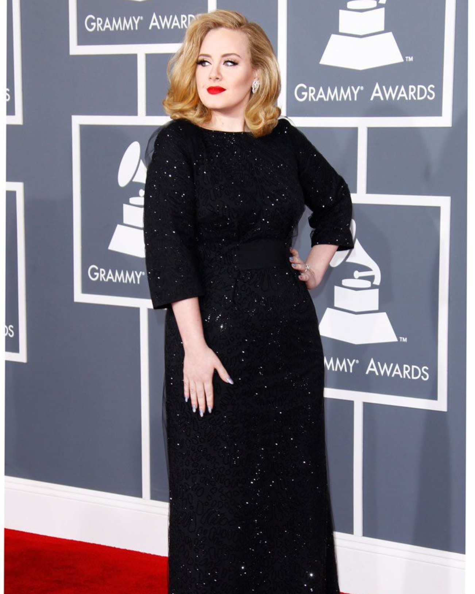

Adele's cover shot for Time's December 2015 Issue

Adele on the red carpet for the 54th Grammy Awards
Adele for Vanity Fair's December 2016 Issue
Adele doesn’t feel the need to be a trailblazer in fashion, as she already is a musical
icon. She takes on a conventional, modest style, but a classic and elegant one at that. Her simple approach
furthermore prevents the design of her chosen pieces from overpowering her as the true beauty. Essentially, she
wears her clothes; they do not wear her.